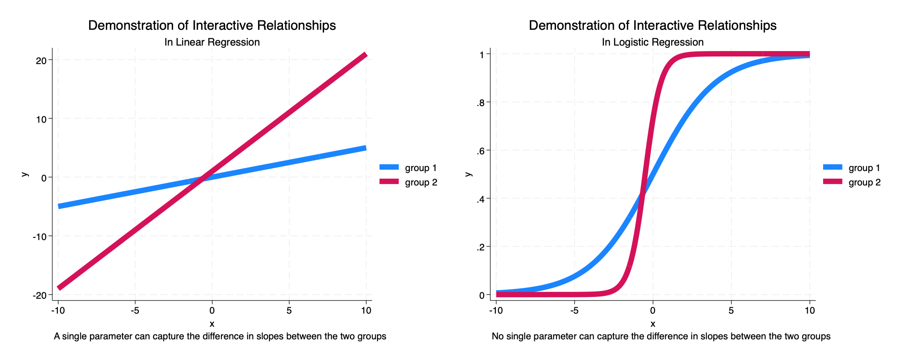
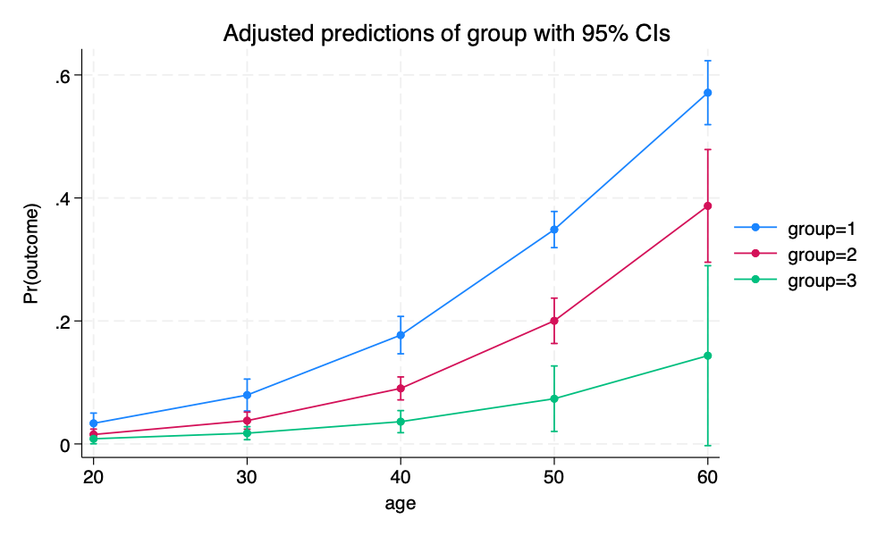

Interactions in Logistic Regression
New Version
1 Background
The purpose of this tutorial is to illustrate the idea that in logistic regression, the \(\beta\) parameter for an interaction term may not accurately characterize the underlying interactive relationships.
This idea may be easier to describe if we recall the formula for a logistic regression:
\[\ln\left(\frac{P(y)}{1 - P(y)}\right) = \beta_0 + \beta_1 x_1 + \beta_2 x_2 + \beta_3 x_1 \times x_2\]
In the above formula, the sign, and statistical significance, of \(\beta_3\) may not accurately characterize the underlying relationship.

Imagine a linear model:
\[y = \beta_0 + \beta_1 x_1 + \beta_2 x_2 + \beta_3 x_1 \times x_2 + e_i\]
Here (following Ai and Norton (2003)):
\[\frac{\partial y}{\partial x_1 \partial x_2} = \beta_3\]
We use \(\text{logit}\) to describe:
\[\ln\left(\frac{P(y)}{1 - P(y)}\right)\]
In the logistic model, the quantity:
\[\frac{\partial \text{logit} (y)}{\partial x_1 \partial x_2}\]
does not have such a straightforward solution, and–importantly for this discussion–is not simply equal to \(\beta_3\).
2 Get The Data
We start by obtaining simulated data from StataCorp.
clear all
graph close _all
use http://www.stata-press.com/data/r15/margex, clear(Artificial data for margins)3 Describe The Data
The variables are as follows:
describeRunning C:\Users\agrogan\Desktop\GitHub\newstuff\categorical\logistic-interacti
> ons-3\profile.do .
Contains data from http://www.stata-press.com/data/r15/margex.dta
Observations: 3,000 Artificial data for margins
Variables: 11 27 Nov 2016 14:27
-------------------------------------------------------------------------------
Variable Storage Display Value
name type format label Variable label
-------------------------------------------------------------------------------
y float %6.1f
outcome byte %2.0f
sex byte %6.0f sexlbl
group byte %2.0f
age float %3.0f
distance float %6.2f
ycn float %6.1f
yc float %6.1f
treatment byte %2.0f
agegroup byte %8.0g agelab
arm byte %8.0g
-------------------------------------------------------------------------------
Sorted by: group4 Estimate Logistic Regression
We then run a logistic regression model in which outcome is the dependent variable. age and group are the independent variables. We estimate an interaction of group and age.
We note that the regression coefficient for the interaction terms are not statistically significant.
logit outcome c.age##i.groupRunning C:\Users\agrogan\Desktop\GitHub\newstuff\categorical\logistic-interacti
> ons-3\profile.do .
Iteration 0: Log likelihood = -1366.0718
Iteration 1: Log likelihood = -1125.2149
Iteration 2: Log likelihood = -1077.539
Iteration 3: Log likelihood = -1074.8422
Iteration 4: Log likelihood = -1074.7864
Iteration 5: Log likelihood = -1074.7863
Logistic regression Number of obs = 3,000
LR chi2(5) = 582.57
Prob > chi2 = 0.0000
Log likelihood = -1074.7863 Pseudo R2 = 0.2132
------------------------------------------------------------------------------
outcome | Coefficient Std. err. z P>|z| [95% conf. interval]
-------------+----------------------------------------------------------------
age | .091183 .0084697 10.77 0.000 .0745827 .1077834
|
group |
2 | -.8272665 .6648279 -1.24 0.213 -2.130305 .4757722
3 | -1.085445 1.044802 -1.04 0.299 -3.133219 .9623292
|
group#c.age |
2 | .0013522 .0139747 0.10 0.923 -.0260378 .0287421
3 | -.0164596 .0259182 -0.64 0.525 -.0672584 .0343392
|
_cons | -5.184398 .4274964 -12.13 0.000 -6.022275 -4.34652
------------------------------------------------------------------------------5 Margins
We use the margins command to estimate predicted probabilities at different values of group and age.
margins group, at(age = (20 30 40 50 60))Running C:\Users\agrogan\Desktop\GitHub\newstuff\categorical\logistic-interacti
> ons-3\profile.do .
Adjusted predictions Number of obs = 3,000
Model VCE: OIM
Expression: Pr(outcome), predict()
1._at: age = 20
2._at: age = 30
3._at: age = 40
4._at: age = 50
5._at: age = 60
------------------------------------------------------------------------------
| Delta-method
| Margin std. err. z P>|z| [95% conf. interval]
-------------+----------------------------------------------------------------
_at#group |
1 1 | .0335453 .0084761 3.96 0.000 .0169325 .0501582
1 2 | .0153532 .0044572 3.44 0.001 .0066173 .0240891
1 3 | .0083644 .0041378 2.02 0.043 .0002545 .0164742
2 1 | .0795185 .0132311 6.01 0.000 .0535861 .105451
2 2 | .0378475 .0070835 5.34 0.000 .023964 .0517309
2 3 | .0174959 .0054051 3.24 0.001 .0069021 .0280896
3 1 | .1769607 .0155126 11.41 0.000 .1465565 .2073649
3 2 | .0902771 .0095282 9.47 0.000 .0716022 .108952
3 3 | .0362321 .0091647 3.95 0.000 .0182697 .0541945
4 1 | .3485893 .0149941 23.25 0.000 .3192014 .3779772
4 2 | .2002224 .0188064 10.65 0.000 .1633625 .2370823
4 3 | .0735312 .0271556 2.71 0.007 .0203072 .1267553
5 1 | .5711598 .0265203 21.54 0.000 .5191809 .6231386
5 2 | .3870919 .0467552 8.28 0.000 .2954535 .4787304
5 3 | .1435103 .0746567 1.92 0.055 -.0028141 .2898347
------------------------------------------------------------------------------6 Plotting Margins
margins provides a lot of results, which can be difficult to understand. Therefore, we use marginsplot to plot these margins results.
There certainly seems to be some kind of interaction of
sexandage.
marginsplot
graph export mymarginsplot.png, width(1000) replace
Running C:\Users\agrogan\Desktop\GitHub\newstuff\categorical\logistic-interacti
> ons-3\profile.do .
Variables that uniquely identify margins: age group
file mymarginsplot.png saved as PNG format
7 Rerun margins, Posting Results
We again employ the margins command, this time using the post option so that the results of the margins command are posted as an estimation result. This will allow us to employ the test command to statistically test different margins against each other.
margins group, at(age = (20 30 40 50 60)) postRunning C:\Users\agrogan\Desktop\GitHub\newstuff\categorical\logistic-interacti
> ons-3\profile.do .
Adjusted predictions Number of obs = 3,000
Model VCE: OIM
Expression: Pr(outcome), predict()
1._at: age = 20
2._at: age = 30
3._at: age = 40
4._at: age = 50
5._at: age = 60
------------------------------------------------------------------------------
| Delta-method
| Margin std. err. z P>|z| [95% conf. interval]
-------------+----------------------------------------------------------------
_at#group |
1 1 | .0335453 .0084761 3.96 0.000 .0169325 .0501582
1 2 | .0153532 .0044572 3.44 0.001 .0066173 .0240891
1 3 | .0083644 .0041378 2.02 0.043 .0002545 .0164742
2 1 | .0795185 .0132311 6.01 0.000 .0535861 .105451
2 2 | .0378475 .0070835 5.34 0.000 .023964 .0517309
2 3 | .0174959 .0054051 3.24 0.001 .0069021 .0280896
3 1 | .1769607 .0155126 11.41 0.000 .1465565 .2073649
3 2 | .0902771 .0095282 9.47 0.000 .0716022 .108952
3 3 | .0362321 .0091647 3.95 0.000 .0182697 .0541945
4 1 | .3485893 .0149941 23.25 0.000 .3192014 .3779772
4 2 | .2002224 .0188064 10.65 0.000 .1633625 .2370823
4 3 | .0735312 .0271556 2.71 0.007 .0203072 .1267553
5 1 | .5711598 .0265203 21.54 0.000 .5191809 .6231386
5 2 | .3870919 .0467552 8.28 0.000 .2954535 .4787304
5 3 | .1435103 .0746567 1.92 0.055 -.0028141 .2898347
------------------------------------------------------------------------------8 margins with coeflegend
We follow up by using the margins command with the coeflegend option to see the way in which Stata has labeled the different margins.
margins, coeflegendRunning C:\Users\agrogan\Desktop\GitHub\newstuff\categorical\logistic-interacti
> ons-3\profile.do .
Adjusted predictions Number of obs = 3,000
Model VCE: OIM
Expression: Pr(outcome), predict()
1._at: age = 20
2._at: age = 30
3._at: age = 40
4._at: age = 50
5._at: age = 60
------------------------------------------------------------------------------
| Margin Legend
-------------+----------------------------------------------------------------
_at#group |
1 1 | .0335453 _b[1bn._at#1bn.group]
1 2 | .0153532 _b[1bn._at#2.group]
1 3 | .0083644 _b[1bn._at#3.group]
2 1 | .0795185 _b[2._at#1bn.group]
2 2 | .0378475 _b[2._at#2.group]
2 3 | .0174959 _b[2._at#3.group]
3 1 | .1769607 _b[3._at#1bn.group]
3 2 | .0902771 _b[3._at#2.group]
3 3 | .0362321 _b[3._at#3.group]
4 1 | .3485893 _b[4._at#1bn.group]
4 2 | .2002224 _b[4._at#2.group]
4 3 | .0735312 _b[4._at#3.group]
5 1 | .5711598 _b[5._at#1bn.group]
5 2 | .3870919 _b[5._at#2.group]
5 3 | .1435103 _b[5._at#3.group]
------------------------------------------------------------------------------9 Testing Margins Against Each Other
Lastly, we test the margins at age 20 across some of the groups, and again at ages 50 and 60 for some of the groups.
We note that the original regression parameter for the interaction term was not statistically significant. Indeed, the margins at age 20 are not statistically significantly different by group (1 vs. 2), though they are close to being significantly different. However, at ages 50 & 60, there is a statistically significant difference by group (1 vs. 2).
test _b[1bn._at#1bn.group] = _b[1bn._at#2.group] // groups 1 & 2 at age 20
test _b[4._at#1bn.group] = _b[4._at#2.group] // groups 1 & 2 at age 50
test _b[5._at#1bn.group] = _b[5._at#2.group] // groups 1 & 2 at age 60Running C:\Users\agrogan\Desktop\GitHub\newstuff\categorical\logistic-interacti
> ons-3\profile.do .
( 1) 1bn._at#1bn.group - 1bn._at#2.group = 0
chi2( 1) = 3.61
Prob > chi2 = 0.0575
( 1) 4._at#1bn.group - 4._at#2.group = 0
chi2( 1) = 38.05
Prob > chi2 = 0.0000
( 1) 5._at#1bn.group - 5._at#2.group = 0
chi2( 1) = 11.73
Prob > chi2 = 0.0006